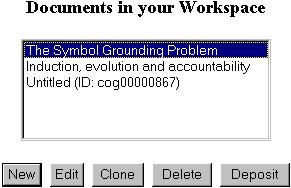

The first thing you'll need to do, after registering, is fill out your user record. When you click on ``Deposit Papers,'' you'll see an option saying ``View/change your user record'': Select this option. The user record form is described below.
Once you've correctly filled out your user record, the ``Deposit Papers'' page will show a number of options and some information. These are described below. Note that the options and information that appear may vary slightly, depending on whether you are in the process of depositing any papers and whether you have any papers pending entry into the main archive.
Your user record is used to hold contact information about you. Some of this information will be associated with eprints you upload; some of it is purely for internal archive use. General information like your name, URL, address and e-mail address are public, so it's inadvisable to put down a home address. (Usually a postal address isn't required.) Information about your operating system is purely to help the archive administrators help you.
Enter the relevant information in the boxes. Those boxes where the box name (on the left of the box) has an asterisk are required fields that you must fill out before you can deposit papers in the archive.
Note that you cannot change your e-mail address here. This is deliberate; if you inadvertently enter an incorrect e-mail address, the site will have no way of contacting you. Instructions for changing your e-mail address can be found on the ``Registrations'' page.
Rather than clicking in each box before you enter something into it, you may find that your browser will let you use the tab key to move the cursor between the boxes. In this way you can enter the information much more quickly.
When you've entered the relevant information, click on the ``Update Record'' button at the bottom of the form. If the form is filled out correctly, you'll be taken back to the ``Deposit Papers'' page. If there's a problem with the form, the form will be presented to you again with a description of what's wrong. Correct the error and click on ``Update Record'' again.
If you start uploading a paper, you can decide that you wish to wait until later before completing the upload, and you can start on another paper. Papers that you are in the process of uploading are in your workspace.
If your workspace is empty, which will be the case when you first visit the page, you will see a button ``Click here to start uploading a document.'' This button will add a fresh, empty record to your workspace and allow you to start editing it.
If there are papers in your workspace, you will see a list of those papers with some options, as shown in figure 6. The title of each paper you are uploading will be shown in the list, or its ID if you haven't yet given it a title.

Figure 6: Workspace Display
Each of the buttons below the list is described below.
The depositing process is described in a following section.
When you first deposit a paper, it is initially held in a `buffer' before being installed in the archive. Any papers you have deposited in this buffer will be listed on the page.
If there is a problem with a paper you have deposited, it will be returned to your workspace, and you will be sent an e-mail telling you what the problem is.
Selecting ``review your documents in the archive'' allows you to see what documents you have in the archive. If you have any documents in the main archive they'll be listed on the page. Next to the title of each will be one or two buttons. The purpose of each is explained below.
This option makes a duplicate of the document (and all associated information), and places the copy in your workspace. The copy will be identical to the original. This option allows you to deposit revisions of your papers more easily without having to re-enter a lot of information that has stayed the same. Additionally, the ``later version of'' field will automatically be filled out; this means that when the paper is deposited in the archive, the different versions of the paper will all be linked. This means that readers will always be able to find the latest or published version of your paper.
If you wish to upload an eprint similar to another already in the archive, you can still use the clone option to save time. In this case, be sure to remove the ID from the ``Later version of'' field so that the eprints are not incorrectly linked.
The policy of some archives may prohibit removal of papers from the archive, so this option may not appear in some archives. Even if it does appear, it should only be used in very exceptional circumstances, when removal of the paper is absolutely necessary; the version linking feature of the archive described above means that people will always see the latest version of your paper.
If you must select this option, you will be presented with a text box into which you should give a reason for requesting the removal of the document. Then click on ``Send Request''. Your request will be sent to the archive administrator, who may remove your paper or correspond with you further via e-mail.
Clicking on this link takes you to your subscriptions page.